Optimización y Programación GPU
Información sobre el curso
- Libros:
- "Professional CUDA C Programming", Cheng, Grossmann, McKercher
- "Parallel Programming: Concepts and Practice", Schmidt, Gonzalez-Dominguez, Hundt, Schlarb
- "Hands On GPU Programming with Python and CUDA", Tuomanen
- El lenguajes del curso es CUDA/C
Programa
- Introduction and the CUDA programming model
- CUDA execution model
- Global memory
- Shared and constant memory
- Streams and concurrency
- Tuning instruction-level primitives
- CUDA libraries and Python
- Aplicaciones (Nbody, ray tracing, OpenGL)
- Proyecto final
Introduction and the CUDA programming model
Introduction
Heterogeneous programming

GPU Hardware
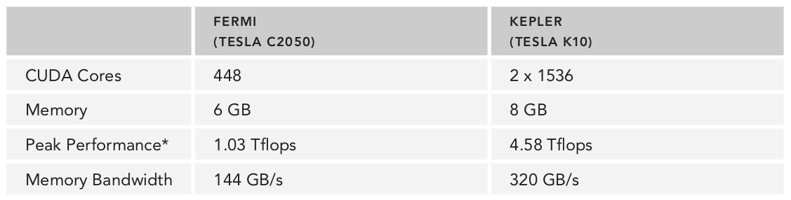GPU Hardware

Compute capability
CPU vs GPU

Accelerating a code

GPU thread vs CPU thread
- Threads on CPU are heavyweights - OS must swap threads on and off CPU execution channels for multithreading. This context switching is expensive.
- CPU cores minimise latency for one or two threads.
- A CPU with 4 quad-core processors can run 16 threads concurrently (32 if hyper-threading is supported).
- Threads on GPU are lightweights - 1000s of threads available, context switching is fast.
- GPU cores handle many concurrent lightweight threads to maximise throughput.
- Modern GPUs support 1536 active threads per mutliprocessor. On a GPU with 16 multiprocessors this means over 24000 concurrently active threads.
CUDA Platform
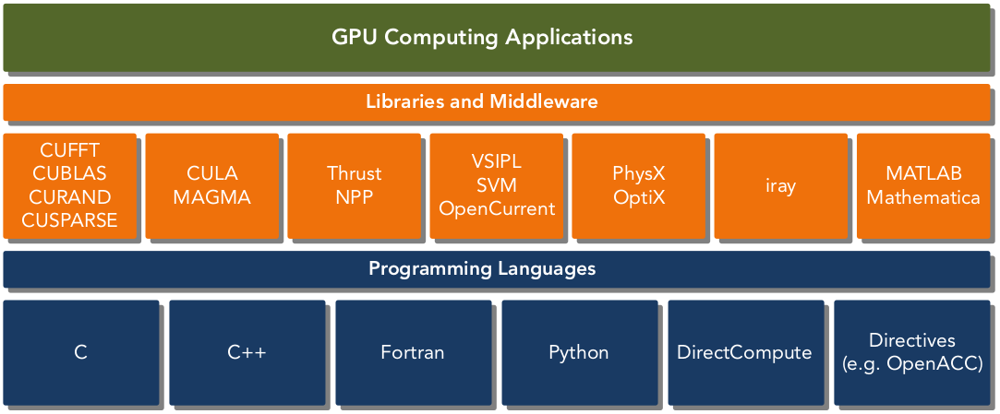Runtime API vs driver API

Runtime or driver API may be used - no significant difference in performance. Runtime API is easier to work with.
NVCC Compiler
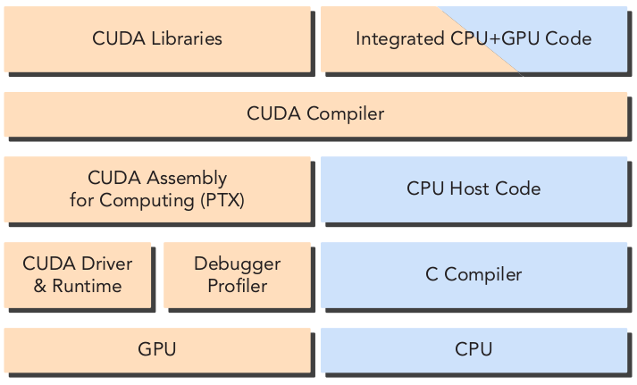- Host code: runs on CPU
- Device code: runs on GPU
Hello World with CUDA
#include <stdio.h>
__global__ void helloFromGPU(void)
{
printf("Hello World from the GPU!\n");
}
int main(){
printf("Hello World from the CPU!\n");
helloFromGPU <<<1, 10>>>();
cudaDeviceReset(); // Clean all resources associated with this device in this process
return 0;
}Compiled with nvcc -arch sm_50 hello_world.cu -o hello_world
Basic CUDA program structure
- Allocate memory on the GPU (device)
- Copy data from CPU memory (host) to GPU memory
- Invoke CUDA kernel to perform computation
- Copy data back from GPU memory to CPU memory
- Destroy (free) GPU memory
Hello World code only uses step 3...
CUDA programming model
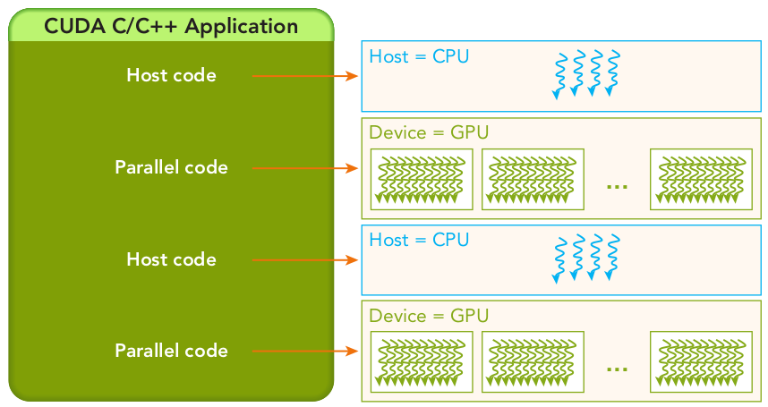Memory functions
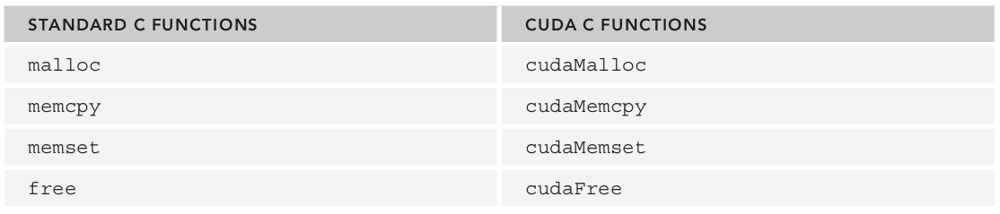cudaError_t cudaMalloc ( void** devPtr, size_t size )
cudaError_t cudaMemcpy ( void* dst, const void* src, size_t count, cudaMemcpyKind kind )
Latter function is synchronous: host is blocked until transfer is complete.
cudaMemcpy kinds
cudaMemcpyHostToHostcudaMemcpyHostToDevicecudaMemcpyDeviceToHostcudaMemcpyDeviceToDevice
CUDA error types
All CUDA function calls (except kernel launches!) return error codes of an enumerated type cudaError_t.
Error code can be converted to human-readable format with:
char* cudaGetErrorString(cudaError_t error).
Memory hierarchy
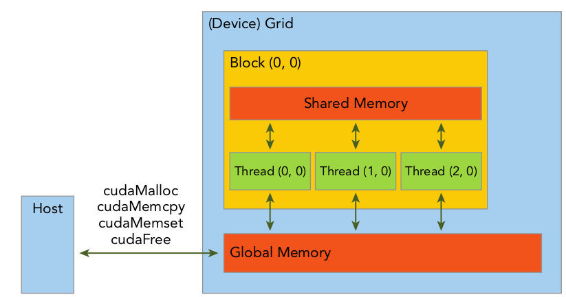CUDA exposes the memory hierarchy of the GPU to the programmer.
- Global memory: similar to system RAM
- Shared memory: similar to CPU cache, but CUDA allows direct control of shared memory
First real example: vector addition
We start with a pure-host version (i.e. executes on CPU)
Host-based array summation
#include <stdlib.h>
#include <string.h>
#include <time.h>
void sumArraysOnHost(float *A, float *B, float *C, const int N) {
for (int idx=0; idx<N; idx++) {
C[idx] = A[idx] + B[idx];
}
}
void initialData(float *ip,int size) {
// generate different seed for random number
time_t t;
srand((unsigned int) time(&t));
for (int i=0; i<size; i++) {
ip[i] = (float)( rand() & 0xFF )/10.0f;
}
}
int main(int argc, char **argv) {
int nElem = 1024;
size_t nBytes = nElem * sizeof(float);
float *h_A, *h_B, *h_C;
h_A = (float *)malloc(nBytes);
h_B = (float *)malloc(nBytes);
h_C = (float *)malloc(nBytes);
initialData(h_A, nElem);
initialData(h_B, nElem);
sumArraysOnHost(h_A, h_B, h_C, nElem);
free(h_A);
free(h_B);
free(h_C);
return(0);
}Using the GPU
Now we will modify the code to use the GPU. First we must declare memory on the GPU to store the arrays.
float *d_A, *d_B, *d_C;
cudaMalloc((float**)&d_A, nBytes);
cudaMalloc((float**)&d_A, nBytes);
cudaMalloc((float**)&d_A, nBytes);Transferring the data from the host to the device:
float *d_A, *d_B, *d_C;
cudaMemcpy(d_A, h_A, nBytes, cudaMemcpyHostToDevice);
cudaMemcpy(d_B, h_B, nBytes, cudaMemcpyHostToDevice);Using the GPU
A kernel would now be invoked (we will write the kernel later) to perform the calculation. As the kernel executes the host is NOT blocked. When the calculation is complete the result is on the GPU in d_C. This must be copied back to the host (to an array called gpuRef):
cudaMemcpy(gpuRef, d_C, nBytes, cudaMemcpyDeviceToHost);
This call blocks the host. Memory on the GPU is then released:
cudaFree(d_A);
cudaFree(d_B);
cudaFree(d_C);Thread organisation
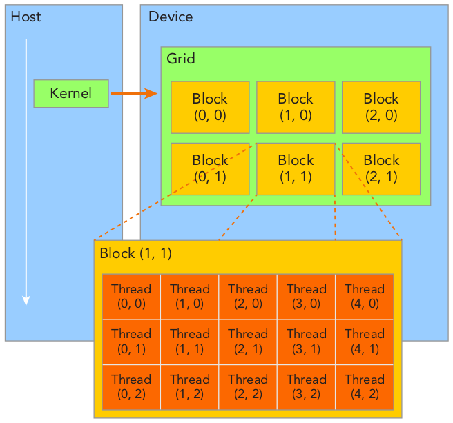- All threads in a kernel launch are called a grid and share a global memory space.
- A grid is composed of thread blocks. These have block-local synchronisation and shared memory.
- Threads have unique coordinates:
blockIdx(block index within a grid) andthreadIdx(thread index within a block).
Thread organisation
Coordinates are a vector type uint3 (device side) defined in CUDA:
blockIdx.x, blockIdx.y, blockIdx.z
threadIdx.x, threadIdx.y, threadIdx.z
Grid and block dimensions are specified using built-in variables of type dim3 (host side):
blockDim (measured in threads), gridDim (measured in blocks)
Thread organisation: code example 1
#include <cuda_runtime.h>
#include <stdio.h>
__global__ void checkIndex(void) {
printf("threadIdx:(%d, %d, %d) blockIdx:(%d, %d, %d) blockDim:(%d, %d, %d) "
"gridDim:(%d, %d, %d)\n", threadIdx.x, threadIdx.y, threadIdx.z,
blockIdx.x, blockIdx.y, blockIdx.z, blockDim.x, blockDim.y, blockDim.z,
gridDim.x,gridDim.y,gridDim.z);
}
int main(int argc, char **argv) {
// define total data element
int nElem = 6;
// define grid and block structure
dim3 block (3);
dim3 grid ((nElem+block.x-1)/block.x);
// check grid and block dimension from host side
printf("grid.x %d grid.y %d grid.z %d\n",grid.x, grid.y, grid.z);
printf("block.x %d block.y %d block.z %d\n",block.x, block.y, block.z);
// check grid and block dimension from device side
checkIndex <<<grid, block>>> ();
// reset device before you leave
cudaDeviceReset();
return(0);
}Compile with nvcc -arch=sm_50 checkDimension.cu -o checkDimension
Thread organisation
For a given problem we must:
- Decide the block size
- Calculate the grid dimension based on data size and block size
To determine the block size we must consider:
- Performance characteristics of the kernel
- Limitations on GPU resources
Thread organisation: code example 2
#include <cuda_runtime.h>
#include <stdio.h>
int main(int argc, char **argv) {
// define total data elements
int nElem = 1024;
// define grid and block structure
dim3 block (1024);
dim3 grid ((nElem+block.x-1)/block.x);
printf("grid.x %d block.x %d \n",grid.x, block.x);
// reset block
block.x = 512;
grid.x = (nElem+block.x-1)/block.x;
printf("grid.x %d block.x %d \n",grid.x, block.x);
// reset block
block.x = 256;
grid.x = (nElem+block.x-1)/block.x;
printf("grid.x %d block.x %d \n",grid.x, block.x);
// reset block
block.x = 128;
grid.x = (nElem+block.x-1)/block.x;
printf("grid.x %d block.x %d \n",grid.x, block.x);
// reset device before you leave
cudaDeviceReset();
return(0);
}Compile with: nvcc defineGridBlock.cu -o defineGridBlock
Launching kernels
kernel_name <<<grid, block>>>(argument list);
Note that threads within a block share memory (they can communicate). Threads in different blocks cannot communicate.
Example: 32 data elements, 8 elements per block: kernel_name<<<4, 8>>>(argument list);
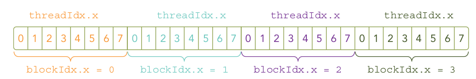
Writing kernels
- Kernels are based on the SPMD model (single program multiple data)
- A kernel is scalar code for a single thread, including the data access for that thread.
- When the kernel is called many threads perform the same operation as defined in the kernel.
- A kernel is defined using the
__global__declaration specification:
__global__ void kernel_name(argument list);
A kernel function must have a void return type.
Function type qualifiers
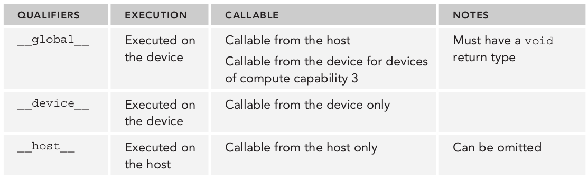
A function can be compiled for both host and device using the relevant qualifiers together.
Kernel restrictions
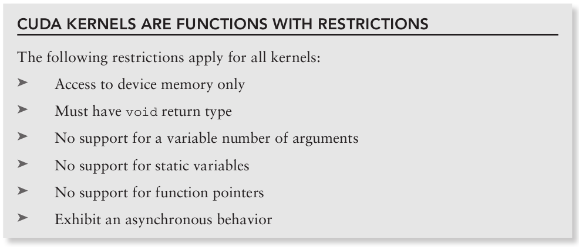
Example: host vector addition
void sumArraysOnHost(float *A, float *B, float *C, const int N) {
for (int i = 0; i < N; i++)
C[i] = A[i] + B[i];
}Example: device vector addition
__global__ void sumArraysOnGPU(float *A, float *B, float *C) {
int i = threadIdx.x;
C[i] = A[i] + B[i];
}There is no for loop, the thread coordinates replace the array index and N is implicitly defined by launching N threads.
For 32 elements, this kernel may be invoked as: sumArraysOnGPU<<<1,32>>>(float *A, float *B, float *C);
Example: verifying the kernel
void checkResult(float *hostRef, float *gpuRef, const int N) {
double epsilon = 1.0E-8;
int match = 1;
for (int i = 0; i < N; i++) {
if (abs(hostRef[i] - gpuRef[i]) > epsilon) {
match = 0;
printf("Arrays do not match!\n");
printf("host %5.2f gpu %5.2f at current %d\n",hostRef[i], gpuRef[i], i);
break;
}
}
if (match) printf("Arrays match.\n\n");
return;
}Handling errors
We can define an error-handling macro to wrap the CUDA API calls:
#define CHECK(call) \
{ \
const cudaError_t error = call; \
if (error != cudaSuccess) \
{ \
printf("Error: %s:%d, ", __FILE__, __LINE__); \
printf("code:%d, reason: %s\n", error, cudaGetErrorString(error)); \
exit(1); \
} \
}Handling errors
This macro can then be used as, for example:
CHECK(cudaMemcpy(d_C, gpuRef, nBytes, cudaMemcpyHostToDevice));
It is often very useful to check for kernel errors during debugging:
kernel_function<<<grid, block>>>(argument list);
CHECK(cudaDeviceSynchronize());
Full vector addition code
#include <cuda_runtime.h>
#include <stdio.h>
#define CHECK(call) \
{ \
const cudaError_t error = call; \
if (error != cudaSuccess) \
{ \
printf("Error: %s:%d, ", __FILE__, __LINE__); \
printf("code:%d, reason: %s\n", error, cudaGetErrorString(error)); \
exit(1); \
} \
}
void checkResult(float *hostRef, float *gpuRef, const int N) {
double epsilon = 1.0E-8;
bool match = 1;
for (int i=0; i < N; i++) {
if (abs(hostRef[i] - gpuRef[i]) > epsilon) {
match = 0;
printf("Arrays do not match!\n");
printf("host %5.2f gpu %5.2f at current %d\n",hostRef[i],gpuRef[i],i);
break;
}
}
if (match) printf("Arrays match.\n\n");
}
void initialData(float *ip,int size) {
// generate different seed for random number
time_t t;
srand((unsigned) time(&t));
for (int i=0; i < size; i++) {
ip[i] = (float)( rand() & 0xFF )/10.0f;
}
}
void sumArraysOnHost(float *A, float *B, float *C, const int N) {
for (int idx=0; idx < N; idx++)
C[idx] = A[idx] + B[idx];
}
__global__ void sumArraysOnGPU(float *A, float *B, float *C) {
int i = threadIdx.x;
C[i] = A[i] + B[i];
}
int main(int argc, char **argv) {
printf("%s Starting...\n", argv[0]);
// set up device
int dev = 0;
cudaSetDevice(dev);
// set up data size of vectors
int nElem = 32;
printf("Vector size %d\n", nElem);
// malloc host memory
size_t nBytes = nElem * sizeof(float);
float *h_A, *h_B, *hostRef, *gpuRef;
h_A = (float *)malloc(nBytes);
h_B = (float *)malloc(nBytes);
hostRef = (float *)malloc(nBytes);
gpuRef = (float *)malloc(nBytes);
// initialize data at host side
initialData(h_A, nElem);
initialData(h_B, nElem);
memset(hostRef, 0, nBytes);
memset(gpuRef, 0, nBytes);
// malloc device global memory
float *d_A, *d_B, *d_C;
cudaMalloc((float**)&d_A, nBytes);
cudaMalloc((float**)&d_B, nBytes);
cudaMalloc((float**)&d_C, nBytes);
// transfer data from host to device
cudaMemcpy(d_A, h_A, nBytes, cudaMemcpyHostToDevice);
cudaMemcpy(d_B, h_B, nBytes, cudaMemcpyHostToDevice);
// invoke kernel at host side
dim3 block (nElem);
dim3 grid (nElem/block.x);
sumArraysOnGPU <<<grid, block>>> (d_A, d_B, d_C);
printf("Execution configuration <<<%d, %d>>>\n",grid.x,block.x);
// copy kernel result back to host side
cudaMemcpy(gpuRef, d_C, nBytes, cudaMemcpyDeviceToHost);
// add vector at host side for result checks
sumArraysOnHost(h_A, h_B, hostRef, nElem);
// check device results
checkResult(hostRef, gpuRef, nElem);
// free device global memory
cudaFree(d_A);
cudaFree(d_B);
cudaFree(d_C);
// free host memory
free(h_A);
free(h_B);
free(hostRef);
free(gpuRef);
return(0);
}General indexing
The kernel currently uses only thread indexing, assuming just one block is present. We can generalise to use any number of blocks:
__global__ void sumArraysOnGPU(float *A, float *B, float *C) {
int i = blockIdx.x * blockDim.x + threadIdx.x;
C[i] = A[i] + B[i];
}
Profiling with nvprof
- A profiler gives information about the execution of a code (timing, memory usage, etc.)
- Profiling tools exist for CPU code in C (gprof)
- For CUDA code there is nvprof. There are more sophisticated visual profilers available as well (nvvp, Nsight).
nvprof [nvprof_args] <application> [application_args]
Useful help is found with: nvprof --help
Profiling with nvprof
We can get useful information about our program using nvprof ./sumArraysOnGPU
Compute or memory bound?
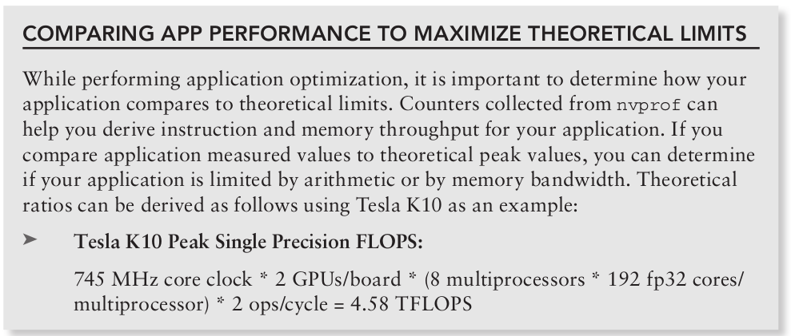
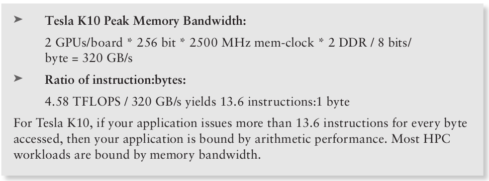
Organising threads
Matrices are typically stored in global memory in row-major order.
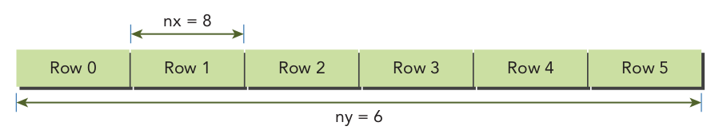
Organising threads
Thread/block indices can be mapped to matrix indices.
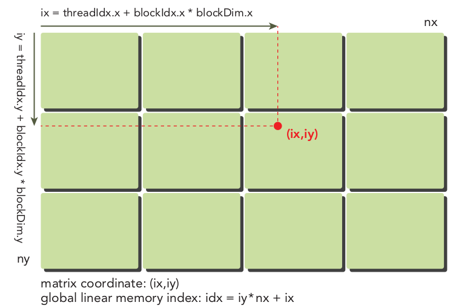
Organising threads
Example of relationship between threads, blocks and matrix coordinates.
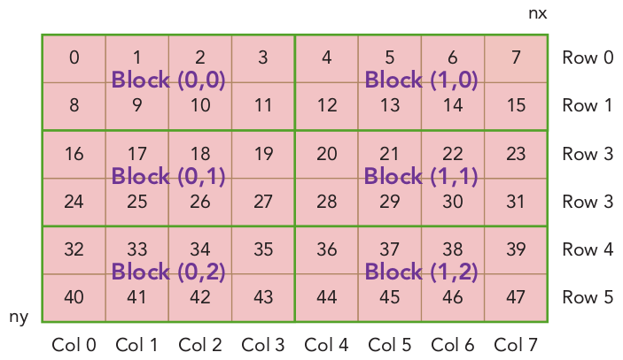
Code example
#include <cuda_runtime.h>
#include <stdio.h>
#define CHECK(call) \
{ \
const cudaError_t error = call; \
if (error != cudaSuccess) \
{ \
printf("Error: %s:%d, ", __FILE__, __LINE__); \
printf("code:%d, reason: %s\n", error, cudaGetErrorString(error)); \
exit(-10*error); \
} \
}
void initialInt(int *ip, int size) {
for (int i=0; i < size; i++) {
ip[i] = i;
}
}
void printMatrix(int *C, const int nx, const int ny) {
int *ic = C;
printf("\nMatrix: (%d.%d)\n",nx,ny);
for (int iy=0; iy < ny; iy++) {
for (int ix=0; ix < nx; ix++) {
printf("%3d",ic[ix]);
}
ic += nx;
printf("\n");
}
printf("\n");
}
__global__ void printThreadIndex(int *A, const int nx, const int ny) {
int ix = threadIdx.x + blockIdx.x * blockDim.x;
int iy = threadIdx.y + blockIdx.y * blockDim.y;
unsigned int idx = iy*nx + ix;
printf("thread_id (%d,%d) block_id (%d,%d) coordinate (%d,%d) "
"global index %2d ival %2d\n", threadIdx.x, threadIdx.y, blockIdx.x,
blockIdx.y, ix, iy, idx, A[idx]);
}
int main(int argc, char **argv) {
printf("%s Starting...\n", argv[0]);
// get device information
int dev = 0;
cudaDeviceProp deviceProp;
CHECK(cudaGetDeviceProperties(&deviceProp, dev));
printf("Using Device %d: %s\n", dev, deviceProp.name);
CHECK(cudaSetDevice(dev));
// set matrix dimension
int nx = 8;
int ny = 6;
int nxy = nx*ny;
int nBytes = nxy * sizeof(float);
// malloc host memory
int *h_A;
h_A = (int *)malloc(nBytes);
// iniitialize host matrix with integer
initialInt(h_A, nxy);
printMatrix(h_A, nx, ny);
// malloc device memory
int *d_MatA;
cudaMalloc((void **)&d_MatA, nBytes);
// transfer data from host to device
cudaMemcpy(d_MatA, h_A, nBytes, cudaMemcpyHostToDevice);
// set up execution configuration
dim3 block(4, 2);
dim3 grid((nx+block.x-1)/block.x, (ny+block.y-1)/block.y);
// invoke the kernel
printThreadIndex <<< grid, block >>>(d_MatA, nx, ny);
cudaDeviceSynchronize();
// free host and devide memory
cudaFree(d_MatA);
free(h_A);
// reset device
cudaDeviceReset();
return (0);
}Summing matrices with a 2D grid and 2D blocks
Host version:
void sumMatrixOnHost (float *A, float *B, float *C, const int nx, const int ny) {
float *ia = A;
float *ib = B;
float *ic = C;
for (int iy=0; iy < ny; iy++) {
for (int ix=0; ix < nx; ix++) {
ic[ix] = ia[ix] + ib[ix];
}
ia += nx; ib += nx; ic += nx;
}
}Summing matrices with a 2D grid and 2D blocks
Device version:
__global__ void sumMatrixOnGPU2D(float *MatA, float *MatB, float *MatC, int nx, int ny) {
unsigned int ix = threadIdx.x + blockIdx.x * blockDim.x;
unsigned int iy = threadIdx.y + blockIdx.y * blockDim.y;
unsigned int idx = iy*nx + ix;
if (ix < nx && iy < ny)
MatC[idx] = MatA[idx] + MatB[idx];
}Summing matrices with a 2D grid and 2D blocks
Key to the kernel is the map from thread index to global linear memory index.
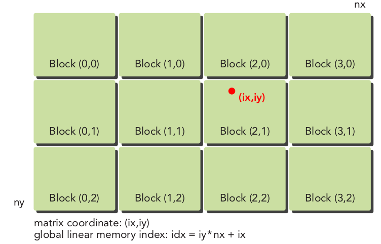
Summing matrices with a 2D grid and 2D blocks
We will use $16384$ elements per dimension, that is 1 << 14.
Kernel configuration is determined as:
int dimx = 32;
int dimy = 32;
dim3 block(dimx, dimy);
dim3 grid((nx + block.x - 1) / block.x, (ny + block.y - 1) / block.y);
Note that the blocks have $32 \times 32 = 1024$ threads.
Summing matrices with a 2D grid and 2D blocks (partial code)
#include <cuda_runtime.h>
#include <stdio.h>
#include <sys/time.h>
double cpuSecond() {
struct timeval tp;
gettimeofday(&tp,NULL);
return ((double)tp.tv_sec + (double)tp.tv_usec*1.e-6);
}
int main(int argc, char **argv) {
printf("%s Starting...\n", argv[0]);
// set up device
int dev = 0;
cudaDeviceProp deviceProp;
CHECK(cudaGetDeviceProperties(&deviceProp, dev));
printf("Using Device %d: %s\n", dev, deviceProp.name);
CHECK(cudaSetDevice(dev));
// set up date size of matrix
int nx = 1 << 14;
int ny = 1 << 14;
int nxy = nx*ny;
int nBytes = nxy * sizeof(float);
printf("Matrix size: nx %d ny %d\n",nx, ny);
// malloc host memory
float *h_A, *h_B, *hostRef, *gpuRef;
h_A = (float *)malloc(nBytes);
h_B = (float *)malloc(nBytes);
hostRef = (float *)malloc(nBytes);
gpuRef = (float *)malloc(nBytes);
// initialize data at host side
double iStart = cpuSecond();
initialData (h_A, nxy);
initialData (h_B, nxy);
double iElaps = cpuSecond() - iStart;
memset(hostRef, 0, nBytes);
memset(gpuRef, 0, nBytes);
// add matrix at host side for result checks
iStart = cpuSecond();
sumMatrixOnHost (h_A, h_B, hostRef, nx,ny);
iElaps = cpuSecond() - iStart;
// malloc device global memory
float *d_MatA, *d_MatB, *d_MatC;
cudaMalloc((void **)&d_MatA, nBytes);
cudaMalloc((void **)&d_MatB, nBytes);
cudaMalloc((void **)&d_MatC, nBytes);
// transfer data from host to device
cudaMemcpy(d_MatA, h_A, nBytes, cudaMemcpyHostToDevice);
cudaMemcpy(d_MatB, h_B, nBytes, cudaMemcpyHostToDevice);
// invoke kernel at host side
int dimx = 32;
int dimy = 32;
dim3 block(dimx, dimy);
dim3 grid((nx+block.x-1)/block.x, (ny+block.y-1)/block.y);
iStart = cpuSecond();
sumMatrixOnGPU2D <<< grid, block >>>(d_MatA, d_MatB, d_MatC, nx, ny);
cudaDeviceSynchronize();
iElaps = cpuSecond() - iStart;
printf("sumMatrixOnGPU2D <<<(%d,%d), (%d,%d)>>> elapsed %f sec\n", grid.x, grid.y, block.x, block.y, iElaps);
// copy kernel result back to host side
cudaMemcpy(gpuRef, d_MatC, nBytes, cudaMemcpyDeviceToHost);
// check device results
checkResult(hostRef, gpuRef, nxy);
// free device global memory
cudaFree(d_MatA);
cudaFree(d_MatB);
cudaFree(d_MatC);
// free host memory
free(h_A);
free(h_B);
free(hostRef);
free(gpuRef);
// reset device
cudaDeviceReset();
return (0);
}Summing matrices with a 2D grid and 2D blocks

Summing matrices with a 1D grid and 1D blocks
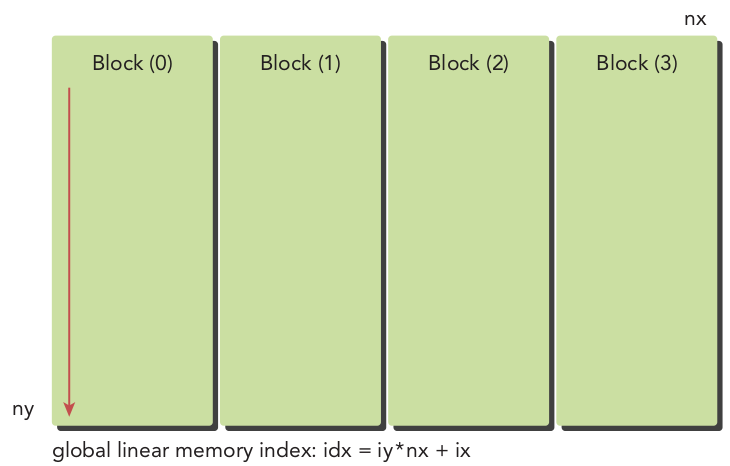
Summing matrices with a 1D grid and 1D blocks
__global__ void sumMatrixOnGPU1D(float *MatA, float *MatB, float *MatC, int nx, int ny) {
unsigned int ix = threadIdx.x + blockIdx.x * blockDim.x;
if (ix < nx ) {
for (int iy=0; iy < ny; iy++) {
int idx = iy*nx + ix;
MatC[idx] = MatA[idx] + MatB[idx];
}
}
}Summing matrices with a 1D grid and 1D blocks
The 1D grid and block configuration is set as follows:
dim3 block(32,1);
dim3 grid((nx+block.x-1)/block.x,1);The kernel is then invoked as:
sumMatrixOnGPU1D <<< grid, block >>>(d_MatA, d_MatB, d_MatC, nx, ny);Summing matrices with a 1D grid and 1D blocks
Performance is similar to 2D grid with block ($32 \times 32$) configuration.
Increasing the block size (to 128) leads to a faster kernel...
Summing matrices with a 2D grid and 1D blocks
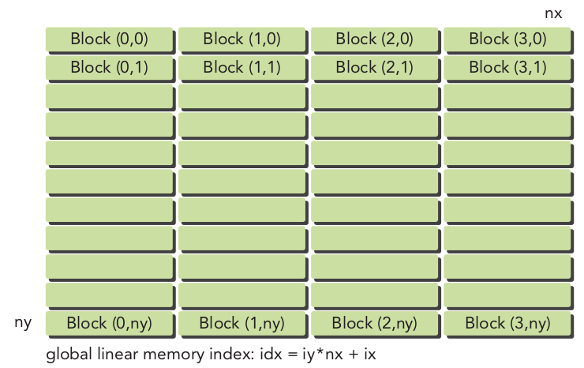
This is a special case of 2D grid, 2D block, where the second dimension of the blocks is equal to $1$.
Summing matrices with a 2D grid and 1D blocks
ix = threadIdx.x + blockIdx.x * blockDim.x;
iy = blockIdx.y;Summing matrices with a 2D grid and 1D blocks
New kernel:
__global__ void sumMatrixOnGPUMix(float *MatA, float *MatB, float *MatC, int nx, int ny) {
unsigned int ix = threadIdx.x + blockIdx.x * blockDim.x;
unsigned int iy = blockIdx.y;
unsigned int idx = iy*nx + ix;
if (ix < nx && iy < ny)
MatC[idx] = MatA[idx] + MatB[idx];
}Summing matrices with a 2D grid and 1D blocks
- The 2D kernel sumMatrixOnGPU2D also works for this execution configuration.
- The only advantage of using this new kernel is to eliminate one integer multiplication and one integer addition per thread.
- We set the block dimension to $32$ and calculate the grid size:
dim3 block(32);
dim3 grid((nx + block.x - 1) / block.x,ny);Kernel invocation:
sumMatrixOnGPUMix <<< grid, block >>>(d_MatA, d_MatB, d_MatC, nx, ny);Compile with: nvcc -arch=sm_50 sumMatrixOnGPU-2D-grid-1D-block.cu -o mat2D1D
Timings of different kernel implementations
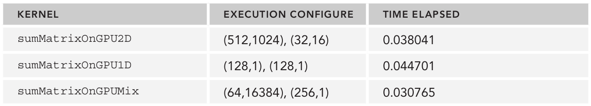
Finding information about GPUs on the system
- With the runtime API:
cudaGetDeviceProperties. See code in CUDA Toolkit samples directory,deviceQuery. - On the command line:
nvidia-smi